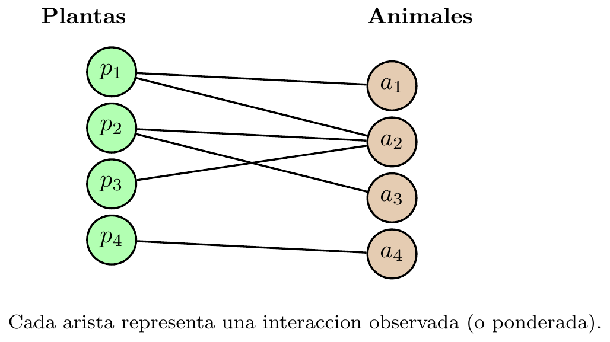
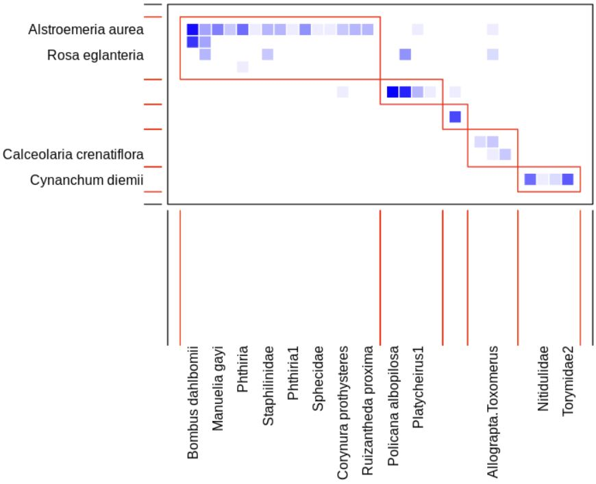

2 Sesion1
3 Sesión 1: Introducción a la Teoría de Grafos
3.1 Objetivos de la sesión 1
- Presentar una propuesta de temario (roadmap) para el estudio de redes de interacción en Ecología con el enfoque de la Teoría de Grafos.
- Motivar por qué el lenguaje de grafos bipartitos es natural en redes de interacción ecológicas.
- Delinear qué haremos en las siguientes sesiones: definiciones, cálculo computacional, interpretación y casos reales.
- Alinear expectativas sobre productos entregables y prácticas de reproducibilidad.
3.2 Objetivos de la parte de Teoría de Grafos
Al finalizar esta parte del seminario, buscaremos que el grupo pueda:
- Definir matemáticamente métricas estándar en grafos bipartitos usados en ecología.
- Calcular las métricas computacionalmente en R (paquete
bipartite), con ejemplos ilustrativos, casos extremos y redes sintéticas. - Interpretarlas en contexto matemático (qué cuantifican, qué no cuantifican, y qué supuestos implican).
- Conectar las métricas con redes reales (bases de datos abiertas y datos proporcionados), y con preguntas ecológicas concretas.
3.3 ¿Por qué grafos bipartitos en ecología de interacciones?
Muchos sistemas de interacción admiten una partición natural en dos tipos de entidades:
- plantas \(\leftrightarrow\) polinizadores,
- plantas \(\leftrightarrow\) dispersores,
- hospederos \(\leftrightarrow\) parásitos,
- plantas \(\leftrightarrow\) herbívoros, etc.
La estructura bipartita permite: * Representar el sistema combinatoriamente y/o como una matriz de incidencia (binaria o ponderada). * Cuantificar patrones estructurales (especialización, anidamiento, modularidad). * Evaluar robustez ante perturbaciones y cambios (tiempo/espacio).
3.4 Ejemplo: esquema de un grafo bipartito
3.5 Ejemplo: matriz bipartita
Una red bipartita puede representarse por una matriz \(B\in\mathbb{R}_{\ge 0}^{p\times q}\):
\[B_{ij}=\begin{cases}0, & \text{si no se observa interacción} \\1, & \text{si se registra presencia/ausencia} \\w_{ij}>0, & \text{si se registra frecuencia/intensidad}\end{cases}\]
Ejemplo (binario): \[\begin{array}{c|cccc} & a_1 & a_2 & a_3 & a_4\\ \hline p_1& 1 & 1 & 0 & 0\\p_2& 0 & 1 & 1 & 0\\p_3& 0 & 1 & 0 & 0\\p_4& 0 & 0 & 0 & 1\end{array}\]
3.6 Propuesta de temario (roadmap)
- Fundamentos y datos: redes bipartitas, matrices de incidencia, datos binarios/ponderados.
- Métricas locales (por nodo/especie): grado/fuerza, dependencia, índices de especialización y roles.
- Métricas globales (por red): conectancia, diversidad de interacciones, anidamiento, modularidad y estructuras mesoscópicas.
- Dinámica temporal y espacial: redes por temporada/año/sitio, recambio de enlaces, beta-diversidad de interacciones.
- Robustez y perturbaciones: extinción primaria/secundaria, curvas de robustez, sensibilidad a especies clave.
- Casos de estudio + prácticas reproducibles: datasets abiertos, ejercicios en R, reporte en Quarto y repositorio en GitHub.
3.7 Herramienta central: bipartite en R
Usaremos bipartite como marco común de implementación:
- Cálculo de métricas a nivel red/especie.
- Visualizaciones (matriz,
plotweb, módulos). - Detección de modularidad en bipartitas.
- Simulaciones de extinción y coextinción.
3.7.1 Ejemplo de código y visualización
library(bipartite)
data(Safariland)
networklevel(Safariland, index = c("connectance","nestedness","H2"))
m <- computeModules(Safariland)
plotModuleWeb(m,
plotModules = TRUE,
rank = TRUE,
weighted = TRUE,
displayAlabels = TRUE,
displayBlabels = TRUE,
labsize = 0.8)Salida esperada: connectance: 0.160493827160494 nestedness: 19.8578346403513 H2: 0.853730724291418

3.8 Conexión con datos reales (y abiertos)
Trabajaremos con redes provenientes de:
- Datasets incluidos en
bipartite(para arrancar rápido). - Repositorios abiertos (por ejemplo, Web of Life, Mangal).
- Datos del grupo (cuando se proporcionen) y redes sintéticas controladas.
Objetivo: vincular métricas con preguntas ecológicas concretas y con decisiones de modelado (binaria vs ponderada).
3.9 Producto entregable: GitHub + Quarto
- notas en entorno web interactivo (definiciones, ejemplos, discusión),
- código en R (funciones y scripts),
- datasets (o instrucciones claras para descargarlos),
- figuras y salidas reproducibles.
Meta: que el repositorio funcione como referencia del seminario y como punto de partida para proyectos.
3.10 ¿Qué sigue?
En las próximas sesiones avanzaremos en el siguiente orden:
- Notación y construcción de redes bipartitas desde datos.
- Métricas locales y globales: definiciones, propiedades y ejemplos.
- Implementación en R con
bipartite: funciones, salidas y visualización. - Interpretación y comparación; incorporación de dinámica y robustez.
- Casos de estudio con redes reales (y documentación).
Sugerencia práctica: tener instalado R/RStudio y el paquete bipartite antes de la siguiente sesión.
4 Fundamentos de Grafos
4.1 ¿Qué es un grafo?
Definición: Grafo simple Un grafo simple \(G\) es un par ordenado \((V, E)\), donde: * \(V\) es un conjunto (finito, por conveniencia en este curso), cuyos elementos se llaman vértices (o nodos). * \(E\) es un conjunto de pares no ordenados de vértices distintos. Los elementos de \(E\) se llaman aristas (o enlaces).
Ejemplo: Sean: * \(V=\{1, 2, 3, 4\}\) * \(E=\{\{1, 2\}, \{1, 3\}, \{2, 3\}, \{3, 4\}\}\)
4.1.1 Terminología básica
- Adyacencia: Dos vértices \(u, v \in V\) son adyacentes (o vecinos) si existe una arista que los une, es decir, si \(\{u, v\} \in E\).
- Incidencia: Una arista \(e \in E\) es incidente a un vértice \(v \in V\) si \(v\) es uno de los extremos de \(e\).
- Orden y tamaño: El orden del grafo es el número de vértices, \(|V|\). El tamaño del grafo es el número de aristas, \(|E|\).
4.2 Variaciones del concepto de grafo
No todos los sistemas se modelan con grafos simples.
- Grafo dirigido (digrafo): Las aristas son pares ordenados de vértices, \((u, v)\), representando una dirección (de \(u\) a \(v\)). Se suelen llamar arcos.
- Multigrafo: Se permiten múltiples aristas entre el mismo par de vértices (Ej: Rutas de vuelo entre ciudades).
- Pseudografo: Se permiten bucles o lazos (aristas que conectan un vértice consigo mismo, \(\{v, v\}\)).
- Grafo ponderado (o red): A cada arista \(e \in E\) se le asigna un valor numérico \(w(e)\), llamado peso (Ej: Pesos que representan distancias entre vuelos).
4.2.1 Actividad rápida: Modelado con grafos
Pregunta para la audiencia En los siguientes sistemas, ¿qué representarían los vértices y las aristas?, ¿qué tipo de grafo sería el más adecuado? 1. La red de amigos en Facebook. 2. El sistema de calles de una ciudad. 3. Las dependencias entre tareas en un proyecto.
Solución sugerida 1. Vértices: Personas. Aristas: Amistad (simétrica). Grafo simple (o quizás ponderado por intensidad). 2. Vértices: Intersecciones. Aristas: Calles. Grafo dirigido (si hay un sentido) y ponderado (distancia/tiempo). 3. Vértices: Tareas. Aristas: Dependencia. Grafo dirigido, acíclico.
4.3 Subgrafos y Subgrafos inducidos
Definición: Subgrafo Un grafo \(H=(V_H, E_H)\) es un subgrafo de \(G=(V_G, E_G)\) si \(V_H \subseteq V_G\), \(E_H \subseteq E_G\) y todas las aristas en \(E_H\) tienen sus extremos en \(V_H\).
Definición: Subgrafo inducido Dado un subconjunto de vértices \(S \subseteq V_G\), el subgrafo inducido por \(S\), denotado \(G[S]\), es el grafo \((S, E_S)\) donde \(E_S\) contiene todas las aristas de \(E_G\) cuyos dos extremos están en \(S\).
4.4 Isomorfismo de grafos
¿Cuándo son dos grafos “esencialmente el mismo”?
Definición: Isomorfismo Dos grafos \(G_1=(V_1, E_1)\) y \(G_2=(V_2, E_2)\) son isomorfos (\(G_1 \cong G_2\)) si existe una función biyectiva \(f: V_1 \to V_2\) tal que: \[\{u, v\} \in E_1 \Leftrightarrow \{f(u), f(v)\} \in E_2\] La función \(f\) preserva la adyacencia.
4.5 Grado de un vértice
Definición: Grado El grado de un vértice \(v\) en un grafo \(G\), denotado \(\deg(v)\) o \(d(v)\), es el número de aristas incidentes a \(v\). Equivalentemente, es el número de vecinos de \(v\).
Teorema: Lema del apretón de manos Para cualquier grafo \(G=(V, E)\), la suma de los grados de todos los vértices es igual al doble del número de aristas: \[\sum_{v \in V} \deg(v) = 2|E|\] Idea de la demostración: Cada arista \(\{u, v\}\) contribuye exactamente dos veces a la suma total de grados.
4.5.1 Actividad rápida: Lema del apretón de manos
Ejercicio ¿Es posible construir un grafo simple con 5 vértices que tengan los siguientes grados: 3, 3, 3, 1, 0?
Solución Calculamos la suma de los grados: \(3+3+3+1+0 = 10\). Según el Lema del apretón de manos, la suma debe ser \(2|E|\). Como \(10\) es par, el lema se cumple (\(|E|=5\)). Sin embargo, cumplir el lema no garantiza la existencia del grafo. Un vértice tiene grado 0 (aislado). En el subgrafo restante de 4 vértices, los grados deben ser 3, 3, 3, 1. Si tres vértices tienen grado 3 en un grafo de 4, todos deben estar conectados a todos, lo que obliga al cuarto vértice a tener grado 3, contradiciendo que debe tener grado 1. No es posible.
4.6 Caminos, ciclos y conectividad
- Camino (simple): Sucesión de vértices distintos \(v_0, v_1, \dots, v_k\) tal que \(\{v_{i-1}, v_i\}\) es una arista para todo \(i\). Longitud = \(k\).
- Ciclo (simple): Un camino con \(k \geq 3\) donde el primer y último vértice son el mismo (\(v_0=v_k\)).
- Conectividad: Un grafo es conexo si existe un camino entre cualquier par de vértices distintos.
- Componente conexa: Subgrafo maximal conexo.
4.7 Representaciones de grafos
4.7.1 Lista de adyacencia
Para cada vértice, almacenamos una lista de sus vecinos. * Ventaja: Eficiente en memoria para grafos esparsos (pocos enlaces). * Desventaja: Verificar existencia de una arista toma tiempo.
4.7.2 Matriz de adyacencia
Definición: Sea \(G=(V, E)\) con \(|V|=n\). La matriz \(A\) de \(n \times n\) donde: \[A_{ij} = \begin{cases} 1 & \text{si } \{i, j\} \in E \\ 0 & \text{en otro caso} \end{cases}\]
4.7.3 Matriz de incidencia
Definición: Sea \(G=(V, E)\) con \(|V|=n\) y \(|E|=m\). La matriz \(B\) de \(n \times m\) donde: \[B_{ie} = \begin{cases} 1 & \text{si el vértice } i \text{ es incidente a la arista } e \\ 0 & \text{en otro caso} \end{cases}\]
4.7.4 El Laplaciano del grafo
Se define con la matriz de grados \(D\) (diagonal con \(D_{ii} = \deg(i)\)).
Definición: Matriz Laplaciana \[L = D - A\]
Propiedades espectrales de L: 1. \(L\) es simétrica. 2. \(L\) es semidefinida positiva (\(\lambda_i \geq 0\)). 3. Siempre \(\lambda_1=0\). La multiplicidad del autovalor 0 es igual al número de componentes conexas del grafo \(G\).
5 Árboles y Conectividad
5.1 Estructura básica: Árboles
Definición: Árbol y bosque Un árbol es un grafo conexo y acíclico. Un bosque es un grafo acíclico (sus componentes conexas son árboles).
Teorema de caracterización: Sea \(G=(V, E)\) un grafo con \(n\) vértices. Son equivalentes: 1. \(G\) es un árbol. 2. \(G\) es conexo y tiene exactamente \(n-1\) aristas. 3. \(G\) es acíclico y tiene exactamente \(n-1\) aristas. 4. Existe un único camino entre cualquier par de vértices. 5. \(G\) es mínimamente conexo. 6. \(G\) es máximamente acíclico.
5.1.1 Actividad rápida: Identificar árboles
Ejercicio: ¿Cuáles de los siguientes grafos son árboles? * G1: \(V=\{1..5\}\), \(E=\{\{1,2\}, \{2,3\}, \{3,4\}, \{4,5\}\}\) * G2: \(V=\{1..5\}\), \(E=\{\{1,2\}, \{2,3\}, \{3,4\}, \{4,5\}, \{5,1\}\}\) * G3: \(V=\{1..5\}\), \(E=\{\{1,2\}, \{2,3\}, \{3,1\}, \{3,4\}, \{4,5\}\}\) * G4: \(V=\{1..6\}\), \(E=\{\{1,2\}, \{2,3\}, \{4,5\}\}\)
Solución: * G1: Sí es un árbol. * G2: No es un árbol (contiene ciclo). * G3: No es un árbol (grafo con \(n\) vértices y \(n\) aristas siempre tiene ciclo). * G4: No es un árbol (es un bosque desconectado).
5.2 Cortes y puentes
- Puente: Arista cuya eliminación desconecta el grafo.
- Vértice de corte: Vértice cuya eliminación aumenta las componentes conexas.
Teorema de Menger (versión vértices) El número mínimo de vértices que se deben eliminar para separar \(u\) de \(v\) es igual al número máximo de caminos internamente disjuntos entre \(u\) y \(v\).
6 Métricas y Análisis de Redes
6.1 Centralidad
Medidas para cuantificar la “importancia” de un nodo.
- Centralidad de grado: Popularidad inmediata. \(C_D(v) = \deg(v)\).
- Centralidad de cercanía (Closeness): Inverso de la distancia promedio a los demás. \[C_C(v) = \frac{1}{\sum_{u \neq v} d(v, u)}\]
- Centralidad de intermediación (Betweenness): Frecuencia con la que actúa como puente en caminos más cortos. \[C_B(v) = \sum_{s \neq v \neq t} \frac{\sigma_{st}(v)}{\sigma_{st}}\]
- Centralidad de vector propio: Ecuación de autovalores de la matriz de adyacencia \(A\mathbf{x} = \lambda\mathbf{x}\).
6.2 Coeficiente de agrupamiento (Clustering)
Coeficiente de agrupamiento local: Fracción de vecinos de \(v\) que están conectados entre sí. \[C(v) = \frac{\text{Número de triángulos que incluyen a } v}{\text{Número de posibles triángulos centrados en } v}\]
6.3 Detección de comunidades y modularidad
Modularidad (Q): \[Q = \frac{1}{2m} \sum_{i,j} \left[ A_{ij} - \frac{k_i k_j}{2m} \right] \delta(c_i, c_j)\] Valores altos indican una fuerte estructura de comunidad.
7 Grafos Bipartitos y Emparejamientos
Definición: Grafo bipartito Un grafo \(G=(V, E)\) es bipartito si \(V\) puede dividirse en \(V_1\) y \(V_2\) disjuntos tal que toda arista conecta \(V_1\) con \(V_2\). No hay aristas internas en los conjuntos.
Teorema: Un grafo es bipartito si y sólo si no contiene ciclos de longitud impar.
Representación Matricial: \[A = \begin{pmatrix}\mathbf{0} & B \\B^T & \mathbf{0}\end{pmatrix}\] Donde \(B\) es la matriz de biadyacencia.
7.1 Emparejamientos (Matchings)
- Emparejamiento: Subconjunto de aristas que no comparten vértices.
- Emparejamiento perfecto: Cubre todos los vértices del grafo.
Teorema de Hall: Sea \(G=(V_1 \cup V_2, E)\) un grafo bipartito. Existe un emparejamiento que cubre todos los vértices de \(V_1\) si y sólo si para todo subconjunto \(S \subseteq V_1\): \[|N(S)| \geq |S|\]
8 Bibliografía General Recomendada
8.0.1 Fundamentos de grafos bipartitos
- Asratian, A. S., Denley, T. M. J., & Häggkvist, R. (1998). Bipartite Graphs and their Applications. Cambridge University Press.
- Hall, P. (1935). “On Representatives of Subsets.” Journal of the London Mathematical Society, 10(1), 26–30.
- Bondy, J. A., & Murty, U. S. R. (1976). Graph Theory with Applications. London: Macmillan.
- Lovász, L., & Plummer, M. D. (1986). Matching Theory. North-Holland.
- Wasserman, S., & Faust, K. (1994). Social Network Analysis: Methods and Applications. Cambridge University Press.
8.0.2 Métricas y propiedades estructurales en grafos bipartitos
- Latapy, M., Magnien, C., & Del Vecchio, N. (2008). “Basic Notions for the Analysis of Large Two-Mode Networks.” Social Networks, 30(1), 31–48.
- Borgatti, S. P., & Everett, M. G. (1997). “Network Analysis of 2-Mode Data.” Social Networks, 19(3), 243–269.
- Dormann, C. F., et al. (2009). “Indices, Graphs and Null Models: Analyzing Bipartite Ecological Networks.” The Open Ecology Journal, 2, 7–24.
- Almeida-Neto, M., et al. (2008). “A Consistent Metric for Nestedness Analysis in Ecological Systems: Reconciling Concept and Measurement.” Oikos, 117(8), 1227–1239.
- Barber, M. J. (2007). “Modularity and Community Detection in Bipartite Networks.” Physical Review E, 76(6), 066102.
- Ouadah, S., Latouche, P., & Robin, S. (2022). “Motif-Based Tests for Bipartite Networks.” Electronic Journal of Statistics, 16(1), 293–330.
- Borgatti, S. P., & Everett, M. G. (1999). “Models of Core/Periphery Structures.” Social Networks, 21(4), 375–395.
8.0.3 Modelos y métricas generalizables a redes bipartitas
- Kunegis, J. (2015). “Exploiting the Structure of Bipartite Graphs for Algebraic and Spectral Graph Theory Applications.” Internet Mathematics, 11(4), 201–231.
- Saracco, F., et al. (2015). “Randomizing Bipartite Networks: The Case of the World Trade Web.” Scientific Reports, 5, 10595.
- Cimini, G., et al. (2019). “The Statistical Physics of Real-World Networks.” Nature Reviews Physics, 1(1), 58–71.